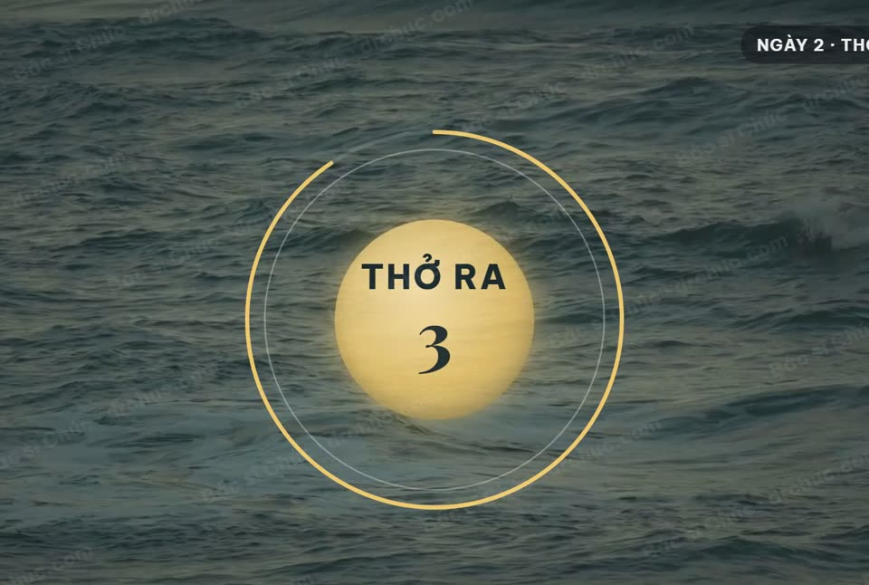
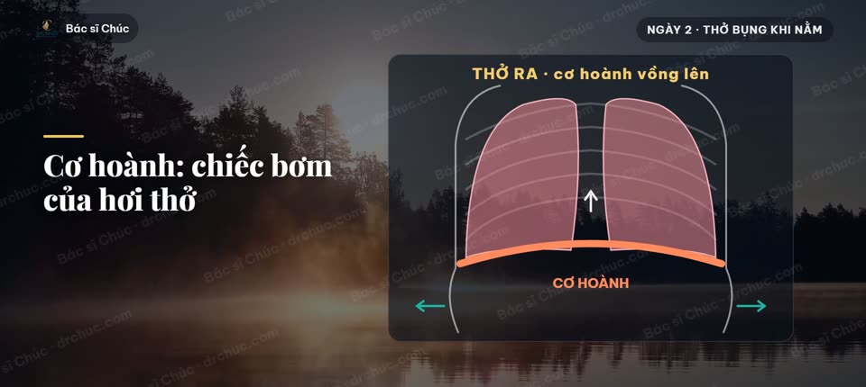
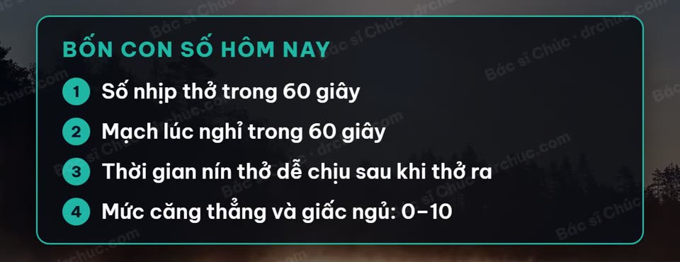
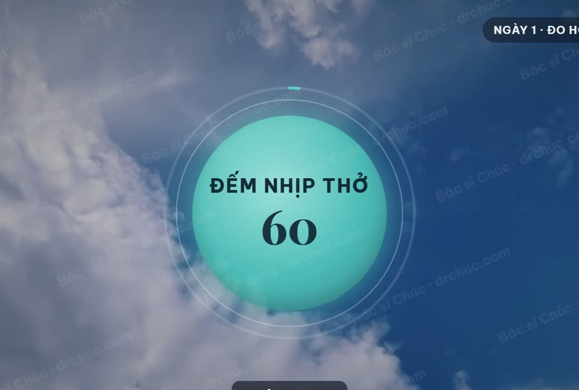
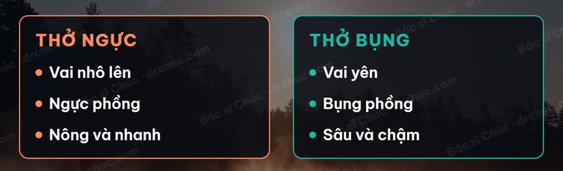
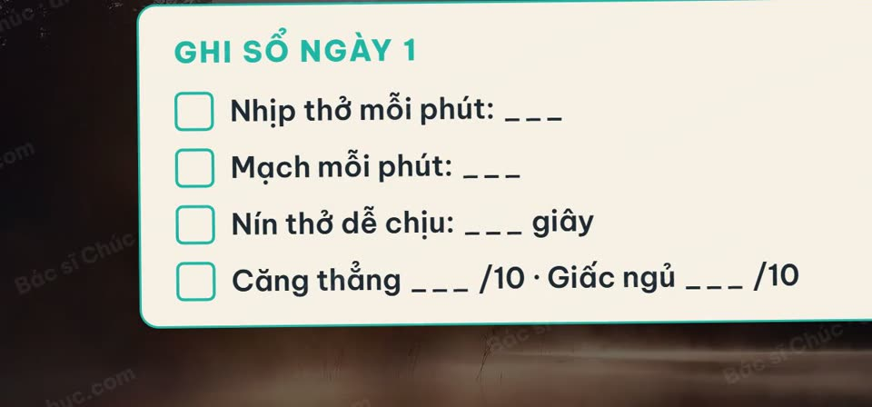

Bác sĩ soạn từng bài, có vòng tròn dẫn nhịp, bản ghi âm nhắm mắt tập theo và bộ tự đo ở đầu, giữa, cuối khóa.
Giá mở bán sớm 299.000đ 399.000đ · Hoàn học phí trong 7 ngày
Bạn đã thử xem vài video dạy thở trên mạng. Tập được hai hôm thì bỏ. Không biết mình thở đúng hay sai. Đang tập thì quảng cáo chen ngang.
Có video bảo thở thật mạnh, nín thật lâu. Ở tuổi mình, bạn không dám.
Khi căng thẳng hay ngồi gù lâu, nhiều người thở nông, thở nhanh, chỉ phồng ngực, có người còn thở bằng miệng. Kiểu thở này hay đi cùng cảm giác gồng, khó thả lỏng.
Nếu hụt hơi, nặng ngực hay chóng mặt mới xuất hiện, nặng dần, hoặc có cả khi ngồi nghỉ, hãy đi khám trước. Đó có thể là dấu hiệu bệnh tim, phổi cần bác sĩ xem.
Tin tốt là: cách thở có thể tập lại được, giống như tập một bài thể dục.
Mỗi ngày tôi chia sẻ kiến thức sức khỏe cho hơn 38.000 người theo dõi trên Facebook và hơn 38.000 người trên TikTok.
Tôi đang dẫn lớp Khí Công Trường Thọ live lúc 6 giờ sáng. Hơi thở chậm, sâu là phần lõi của mọi buổi tập.
Khóa này được soạn dựa trên hàng chục nghiên cứu, tuyên bố khoa học của Hội Tim mạch Hoa Kỳ (AHA), hướng dẫn quốc tế về bệnh phổi tắc nghẽn mạn tính (GOLD 2025) và về hen (GINA 2024). Bài nào có bằng chứng thì giữ. Bài nào lợi ít mà rủi ro rõ thì bỏ.
Vì vậy khóa không có kiểu thở nhanh rồi nín thở (như phương pháp Wim Hof), và không khuyên dán miệng khi ngủ.
Khóa học là giáo dục sức khỏe, không thay thế khám và điều trị.
Đây là một nhân vật ví dụ, ghép từ những điều người 40–70 tuổi hay kể với tôi. Phần "Sau 21 ngày" là những gì bạn sẽ có trong tay, không phải kết quả của một học viên cụ thể.
Trước. Một người 50 tuổi làm văn phòng. Ngày nào cũng họp, cũng chạy việc. Buổi tối hay hồi hộp vô cớ, khó vào giấc. Đo huyết áp ở nhà thấy số trên lúc 128, lúc 136. Đã thử vài bài thở trên mạng nhưng không đều, cũng không biết làm có đúng không.
Bế tắc. Muốn tập mà không biết bắt đầu từ đâu, tập bao lâu, khi nào thì nên dừng.
Bắt đầu. Mỗi sáng chọn một giờ cố định, một chiếc ghế có lưng tựa. Mở bài của ngày hôm đó, xem 2–3 phút để hiểu, rồi nhắm mắt thở theo tiếng chuông 10–15 phút. Ghi vào sổ tay 30 giây.
Sau 21 ngày, người tập sẽ có trong tay ba thứ:
Số liệu thật từ nghiên cứu: năm 2024, một thử nghiệm ở 84 phụ nữ trung niên hay căng thẳng, có dấu hiệu trầm cảm, chia làm hai nhóm. Một nhóm thở chậm 15 phút mỗi ngày (kèm tắm nước ấm). Nhóm kia thở kiểu Wim Hof (kèm tắm lạnh). Sau 3 tuần, điểm căng thẳng của cả hai nhóm giảm khoảng một phần năm. Nhóm thở chậm không ai bỏ cuộc; cả 6 người bỏ cuộc đều ở nhóm Wim Hof.
Nghiên cứu không có nhóm không tập để so, nên đây là tín hiệu tốt, chưa phải kết luận chắc chắn. (Blades và cộng sự, 2024)
Bước tiếp theo. Tập đều tới tuần thứ 8 rồi đo lại huyết áp. Các nghiên cứu về huyết áp phần lớn đo sau 4–8 tuần tập.
| Bạn đang gặp | Trong khóa | Bạn nhận được |
|---|---|---|
| Vai cứng, ngực nặng, thở nông | Tuần 1: thở bụng khi nằm, khi ngồi, thả vai | Hơi thở xuống bụng, êm hơn. Vai bớt gồng |
| Khó vào giấc | Bộ thở buổi tối: thở ra dài, thả lỏng từng vùng, thở 6 nhịp/phút khi nằm | Thở chậm trước khi ngủ có thể giúp bạn dễ vào giấc hơn |
| Hồi hộp, dễ bực | Ba bài thở ngắn: thở dài chu kỳ (hít mũi 2 lần, thở ra dài) 1 phút, thở ra dài 2 phút, thở hộp (hít 4, giữ 4, thở ra 4, nghỉ 4) 2 phút | Có cách tự dịu lại khi chờ khám, trước khi nói chuyện khó |
| Leo cầu thang hụt hơi | Ngày 15–16: thở theo bước chân, thở mím môi khi gắng sức | Thở mím môi là kỹ thuật hướng dẫn quốc tế về bệnh phổi tắc nghẽn mạn tính có nhắc tới. Nó có thể giúp bạn đỡ hụt hơi khi leo cầu thang, mang vác |
| Huyết áp hơi cao, lo lắng | Tuần 2–3: thở chậm khoảng 6 nhịp/phút, đo trước và sau | Ngay trong buổi tập, nhịp tim dịu lại. Tập đều nhiều tuần, huyết áp có thể giảm nhẹ |
| Tập không đều, không biết đúng sai | Vòng tròn dẫn nhịp, chuông đổi nhịp, ghi âm nhắm mắt | Chỉ cần nghe chuông và thở theo. Không phải tự đếm |


Bạn tắt điện thoại, nằm xuống. Bàn tay đặt trên bụng, lên xuống chậm rãi. Tiếng chuông nhỏ dần. Bạn thở chậm theo tiếng chuông, thay vì nằm đếm từng giờ.
Sáng hôm sau, bạn mở sổ tay, nhìn lại con số đầu khóa và cuối khóa. Lần đầu tiên bạn biết rõ cơ thể mình đang thế nào, bằng con số của chính mình.
Chiều đó có chuyện bực mình ở cơ quan. Bạn không cáu ngay. Bạn hít vào bằng mũi hai lần, thở ra thật dài. Vài phút sau, bạn thấy dịu hơn.
Tôi muốn bắt đầu| Học gì? | 21 bài, chia 3 tuần: thở đúng chỗ · thở chậm, tim dịu · mang hơi thở vào đời sống |
| Mỗi bài có gì? | Video: 2–3 phút hiểu (hình minh họa) + 5–15 phút tập theo vòng tròn dẫn nhịp + 30 giây ghi sổ. Kèm bản ghi âm để nhắm mắt tập |
| Học bao lâu? | 10–15 phút mỗi ngày, 21 ngày. Khóa mở học từ thứ Hai 09/11/2026. Xem lại trọn đời |
| Học ở đâu? | Trên trang web drchuc.com. Điện thoại, máy tính bảng, máy tính đều xem được. Bản ghi âm tải về điện thoại, tập không cần nhìn màn hình |
| Học với ai? | Bác sĩ Chúc soạn bài. Bạn tập theo giọng dẫn và vòng tròn dẫn nhịp. Gói "Có hỏi đáp cùng bác sĩ" thêm nhóm Zalo và 2 buổi Zoom (gọi video nhóm) hỏi đáp trực tiếp |
| Tài liệu kèm | Sổ tay 21 ngày (in ra giấy được) + phiếu đo |
| Học xong làm được gì? | Thở bụng, thở mũi, thở chậm 6 nhịp/phút trọn 15 phút; có bộ thở sáng, bộ thở tối, 3 bài thở ngắn 1–2 phút; biết tự đo và đọc con số của mình |


Vài bài có giữ hơi ngắn 4–7 giây, luôn có bản không giữ hơi cho người huyết áp cao, có bệnh tim, bệnh phổi hoặc đang mang thai. Từ ngày 8, ngày nào bài tập ngắn hơn 10 phút thì thêm "bài nền" 10 phút buổi tối.
| Cách | Chi phí |
|---|---|
| Lớp thở trực tuyến qua Zoom trong nước | 1,2 triệu/tháng (12 buổi) đến 2,7 triệu/khóa (15 buổi) |
| Khóa thở quay sẵn tiếng Việt | 399.000–599.000đ |
| Chương trình thở 21 ngày quốc tế (tiếng Anh) | 47–197 USD khoảng 1,2–5 triệu đồng |
| 21 ngày Thở Sâu Sống Khỏe | 299.000đ khoảng 14.000đ một ngày |
Và bạn giữ được kỹ năng này cả đời. Không cần máy móc, không cần đến lớp.
Xem 3 cách họcĐược, nếu bạn không thuộc nhóm cần hỏi bác sĩ trước (xem câu cuối mục này). Bài thở chậm, nhẹ, có bản nằm và bản ngồi ghế. Trong một thử nghiệm nhỏ (22 người cao tuổi, tập một buổi), nhịp tim của người lớn tuổi cũng dịu lại khi thở chậm, không kém người trẻ.
Bạn vẫn tập được, và tiếp tục uống thuốc như bác sĩ điều trị dặn. Tập thở là thói quen hỗ trợ, đi cùng thuốc. Không tự giảm hay bỏ thuốc khi thấy số đo đẹp hơn. Nếu bạn huyết áp thấp hoặc hay choáng khi đứng dậy, hãy hỏi bác sĩ điều trị trước khi tập. Khi được tập, hãy ngồi hoặc nằm, đứng dậy từ từ. Nếu số đo thấp hơn hẳn mọi khi hoặc thấy choáng, hãy báo bác sĩ điều trị để bác sĩ xem lại thuốc. Đừng tự chỉnh thuốc.
Mỗi ngày 10–15 phút, có ngày chỉ 5 phút. Có bản ghi âm để tập lúc nằm trên giường, không cần nhìn màn hình.
Được, nếu bạn tập đều. Khóa này khác ở ba chỗ: lộ trình hạ nhịp từng bước, bác sĩ lọc bài an toàn cho tuổi 40–70, và bộ tự đo để bạn thấy mình tiến bộ bằng con số.
Khi đang tập thở, chóng mặt thường là do thở quá nhiều, quá mạnh. Ngày 10 của khóa dạy đúng điều này: "thở sâu" không phải "thở nhiều". Bài nào cũng nhắc khi nào cần dừng. Nếu bạn chóng mặt cả lúc không tập, hoặc kèm tim đập không đều, ngất, hãy đi khám trước khi học.
Bạn có 7 ngày để học thử tuần đầu. Không hợp thì nhắn, tôi hoàn lại toàn bộ học phí.
Hãy hỏi bác sĩ điều trị trước khi tập nếu bạn có:
Chóng mặt, tê môi hoặc đầu ngón tay, khó thở tăng, đau tức ngực, tim đập nhanh hoặc không đều. Ngồi hoặc nằm, thở tự nhiên bằng mũi.
Đau ngực trên 5 phút, ngất, yếu nửa người, nói khó: gọi cấp cứu 115.
Không tập bài giữ hơi khi lái xe, khi đứng trên cao, ở gần nước.
Mỗi ngày bạn thở khoảng 20.000 lần. Tập lại cách thở từ hôm nay thì ngày nào bạn cũng dùng tới. Thói quen bắt đầu càng sớm càng dễ giữ.
Các nghiên cứu về huyết áp thường đo sau 4–8 tuần tập đều, và mức giảm nếu có là nhẹ. Vì vậy khóa có sẵn kế hoạch tập tiếp tới tuần 8, kèm thư nhắc bạn đo lại.
Và đây là đợt mở bán đầu tiên. Giá mở bán sớm chỉ có ở đợt này.
⏰ Giá mở bán sớm 299.000đ chỉ áp dụng trong 7 ngày đầu hoặc cho 100 người đầu tiên, tùy điều kiện nào đến trước. Sau đó khóa về giá 399.000đ.
| Bạn nhận được | Giá trị ước tính |
|---|---|
| 21 bài video có vòng tròn dẫn nhịp, bác sĩ soạn | 2.100.000đ |
| 21 bản ghi âm nhắm mắt tập theo | 630.000đ |
| Bộ tự đo 3 mốc + phiếu đo | 300.000đ |
| Sổ tay 21 ngày (in ra giấy được) | 200.000đ |
| Tổng giá trị ước tính | 3.230.000đ |
| Giá mở bán sớm | 299.000đ |
Cách tôi ước tính: mỗi bài video tính như một buổi tập có người hướng dẫn 100.000đ, mỗi bản ghi âm 30.000đ. Bài Ngày 21 có sẵn kế hoạch tập tiếp 8 tuần. Xem lại trọn đời.
| Quà | Dùng khi | Giá trị |
|---|---|---|
| Bản đầy đủ 15 phút của bài nền thở 6 nhịp/phút, không lời dẫn, chỉ chuông và nhạc | Tập hằng ngày sau khóa | 150.000đ |
| Ghi âm 30 phút nằm giường cho người khó ngủ | Buổi tối khó vào giấc | 200.000đ |
| Ghi âm "1 phút thở dài chu kỳ" | Lúc đang bực, đang hồi hộp | quà miễn phí |
| Thư nhắc đo lại ở tuần 8 | Giữ thói quen, theo dõi huyết áp | kèm theo |
| Tổng quà có giá | 350.000đ | |
Gói Có hỏi đáp cùng bác sĩ (790.000đ) thêm: nhóm Zalo của khóa và 2 buổi Zoom (gọi video nhóm) hỏi đáp trực tiếp với Bác sĩ Chúc.
Bắt đầu 21 ngày của tôi

Một đoạn trong bài Ngày 2. Bật tiếng, thử thở theo vòng tròn.
Cảm nhận học viên: đây là đợt đầu tiên của khóa. Tôi không đặt lời khen nào khi chưa có học viên thật. Cảm nhận và con số đo của học viên đợt đầu sẽ được cập nhật ở đây, khi họ đồng ý.
Tập theo nhịp của mình, mỗi ngày một bài.
399.000đ299.000đ
trọn khóa · xem trọn đời
Cho người muốn hỏi thêm về cách tập cho hợp với mình. Câu hỏi về bệnh và thuốc, bạn hỏi bác sĩ điều trị.
790.000đ
trọn khóa
Cô chú anh chị đang sống ở nước ngoài.
29 USD
như gói Tự học
🛡️ Hoàn lại toàn bộ học phí trong 7 ngày kể từ khi nhận tài khoản học: tập tuần đầu, thấy không hợp thì nhắn Zalo kèm số điện thoại đã đăng ký, không cần nêu lý do.
Hội viên lớp Khí Công Trường Thọ: giảm 50%, còn 199.000đ. Bác sĩ đối chiếu danh sách lớp trước khi gửi tài khoản.
Khóa mở học từ thứ Hai 09/11/2026. Đăng ký hôm nay giữ giá mở bán sớm; tài khoản vào học gửi vào email trước ngày khai giảng.